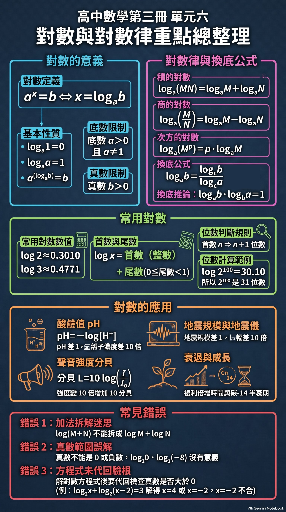

6-1
對數的意義與基本性質
- aˣ = b ⇔ x = logₐb：對數就是「指數」，回答「a 的幾次方是 b」
- 底數 a > 0 且 a ≠ 1、真數 b > 0；logₐ1 = 0、logₐa = 1、a^(logₐb) = b
4資訊圖表重點
點一下放大全圖
2互動視覺化：a 的幾次方是 b？
拖曳 y 軸上的白點（或拉滑桿）改變 b：黃色水平線 y = b 和曲線 y = aˣ 的交點，橫坐標就是 logₐb。把 b 拉到 0 以下、或選底數 1，看看會發生什麼事。
1NotebookLM 簡報
3隨堂評量
6-2
對數律與換底公式
- 乘變加、除變減、次方變倍數：logₐ(MN) = logₐM + logₐN；log(M + N) 不能拆
- 換底公式 logₐb = log b ÷ log a；解對數方程式一定要驗根
4資訊圖表重點
點一下放大全圖
2互動視覺化
拖曳下尺（青色）讓它的「1」對準上尺的 M，再拖曳紅色游標線到下尺的 N，上尺讀到的就是 M × N：長度相加 = 對數相加 = 真數相乘。
1NotebookLM 簡報
3隨堂評量
6-3
常用對數
- log x = 首數（整數）+ 尾數（0 ≤ 尾數 < 1）；首數決定位數，尾數決定數字排列
- x ≥ 1 且首數 n ⇒ n + 1 位數；0 < x < 1 且首數 −k ⇒ 小數點後第 k 位開始不為 0
4資訊圖表重點
點一下放大全圖
2互動視覺化：大數解碼器
用課本的近似值 log 2 ≈ 0.3010、log 3 ≈ 0.4771、log 5 ≈ 0.6990、log 7 ≈ 0.8451 計算首數與尾數，再和電腦算出的「真正的數」對照。尾數落在哪兩個刻度之間，最高位數字就是多少。
1NotebookLM 簡報
3隨堂評量
6-4
對數的應用
- 無法化同底時兩邊取對數：2ˣ = 5 ⇒ x = log 5 ÷ log 2 ≈ 2.32；除以負的對數值，不等號要反向
- 對數尺度「差 1 就差 10 倍」：pH、地震規模（能量差約 31.6 倍）、分貝（每 10 分貝強度差 10 倍）
4資訊圖表重點
點一下放大全圖
2互動視覺化：對數尺度比一比
上方是「對數刻度」（課本、新聞用的數字），下方長條是「實際的量」用一般刻度畫：刻度上只差一點點，實際的量可能差好幾百倍。
1NotebookLM 簡報
3隨堂評量
🧠
單元心智圖
- NotebookLM 產生的概念架構（中文版）：點小標題可展開或收合
- 上課可先全部收合，請學生猜每個分支下面有什麼，再逐一打開
🃏
學習卡
- 點卡片（或按空白鍵）翻面看答案；← → 切換上一張、下一張
- 標記「我會了／再複習」，可以只練還不熟的卡片；標記只存在這台電腦的瀏覽器
★
總複習
- 封面、單元核心觀念總結、自我檢測 10 題（附答案）、NotebookLM 教學影片，以及完整資訊圖表（含常見錯誤）
1NotebookLM 簡報：核心觀念總結與自我檢測
▶NotebookLM 教學影片
4完整資訊圖表

點一下放大